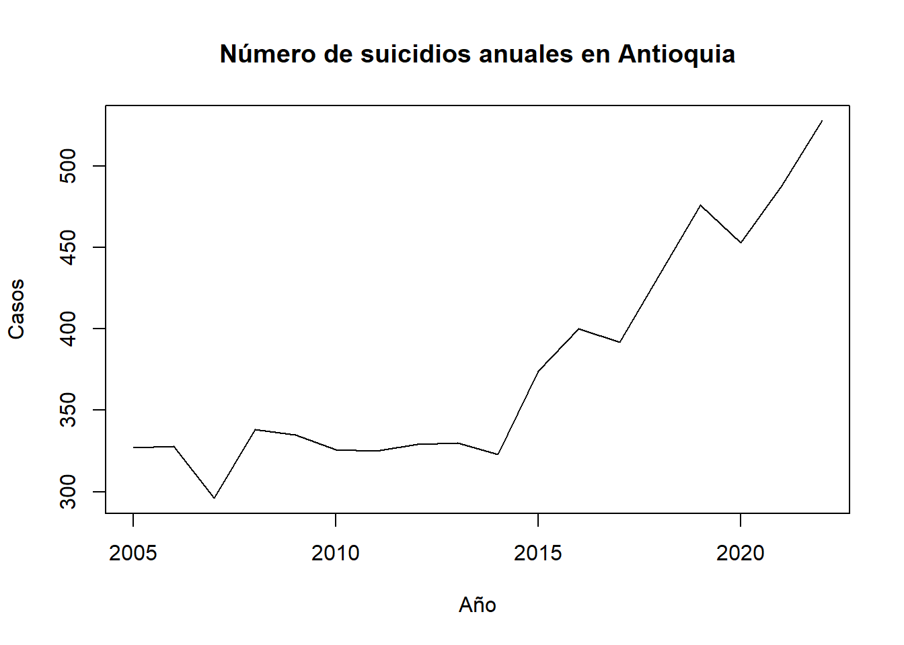
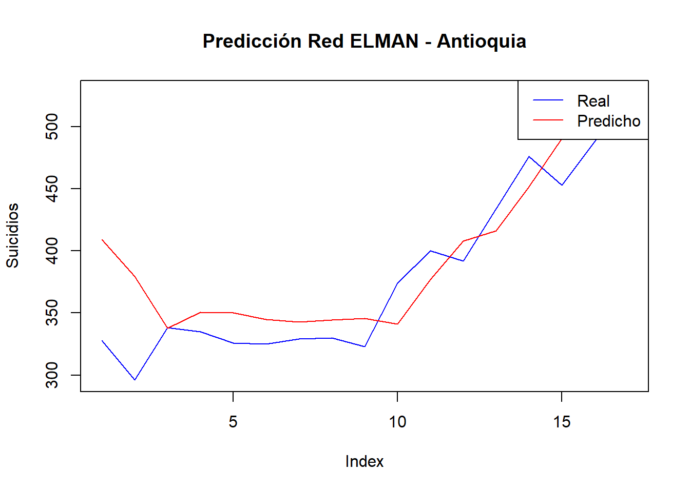
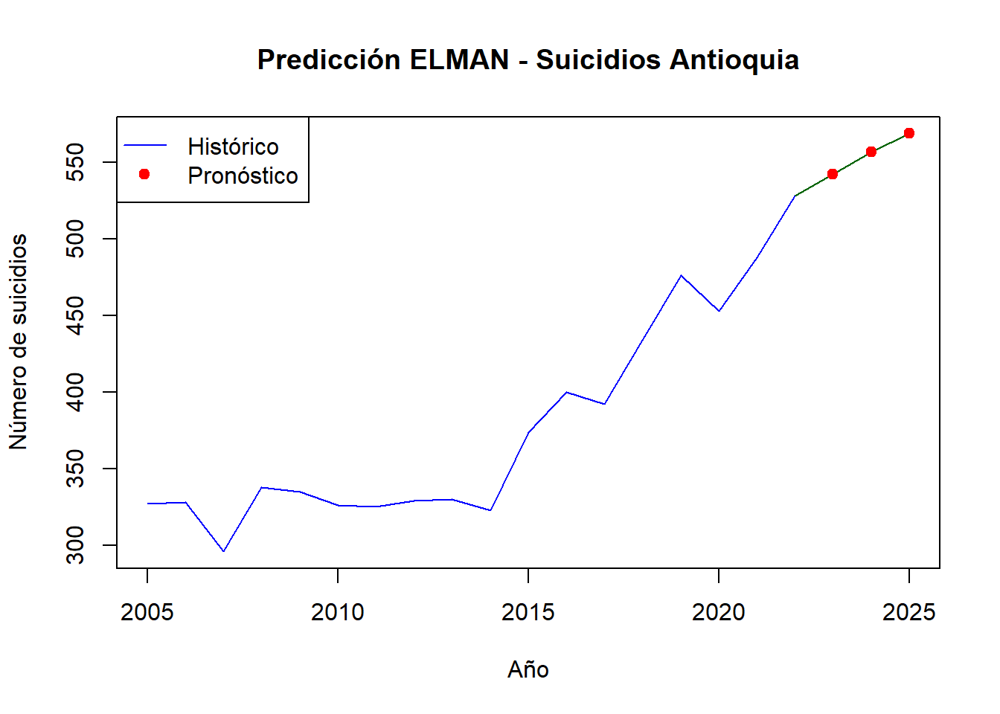
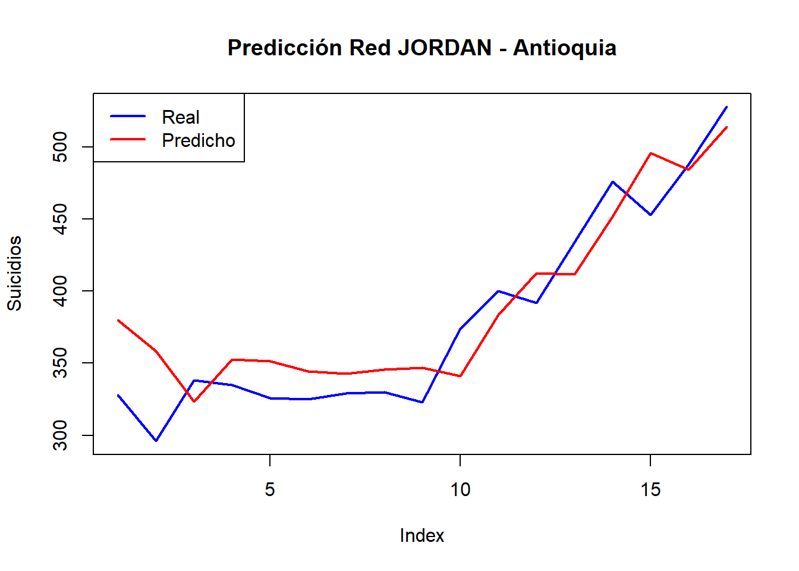
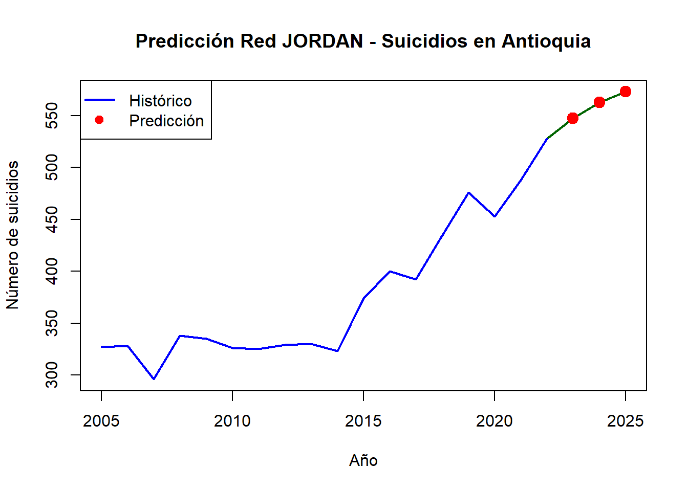
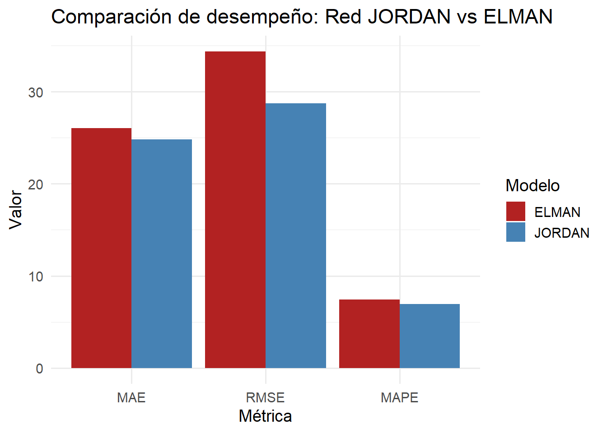

Capítulo 6 Redes Neuronales
6.1 Redes Neuronales: ELMAN
Una Red Neuronal Recurrente (RNN, por sus siglas en inglés) es un tipo de red neuronal que se utiliza para procesar datos secuenciales, como texto, audio o series temporales. A diferencia de las redes neuronales tradicionales, las RNN tienen conexiones que permiten que la información fluya en ciclos, lo que les otorga la capacidad de “recordar” información de entradas anteriores. Esto las hace especialmente útiles para tareas como la traducción automática, el análisis de sentimientos y la predicción de series temporales.
La arquitectura de Elman es una variante simple de las RNN, propuesta por Jeffrey Elman en 1990. Su principal característica es la inclusión de una capa de “contexto” que almacena una copia de las activaciones de la capa oculta en el paso de tiempo anterior.
# Agrupar por año para todo Antioquia
serie_anual <- datos %>%
group_by(anio) %>%
summarise(
total_poblacion = sum(numeropoblacionobjetivo, na.rm = TRUE),
total_casos = sum(numerocasos, na.rm = TRUE)
) %>%
arrange(anio)
# Verificar la serie
print(serie_anual)## # A tibble: 18 × 3
## anio total_poblacion total_casos
## <dbl> <dbl> <dbl>
## 1 2005 5294419 327
## 2 2006 5037432 328
## 3 2007 5064900 296
## 4 2008 5162473 338
## 5 2009 5309573 335
## 6 2010 5445884 326
## 7 2011 5709729 325
## 8 2012 5496977 329
## 9 2013 5654138 330
## 10 2014 5942561 323
## 11 2015 5856727 374
## 12 2016 6102826 400
## 13 2017 6000779 392
## 14 2018 6269168 434
## 15 2019 6252738 476
## 16 2020 6357981 453
## 17 2021 6491985 488
## 18 2022 6567697 528# Crear objeto ts
ts_casos <- ts(serie_anual$total_casos, start = min(serie_anual$anio), frequency = 1)
# Gráfico de la serie
plot(ts_casos, main = "Número de suicidios anuales en Antioquia", ylab = "Casos", xlab = "Año")
# Normalización
x <- serie_anual$total_casos
x_norm <- (x - min(x)) / (max(x) - min(x))
# Lag 1
X <- x_norm[-length(x_norm)] # t
Y <- x_norm[-1] # t+1
# Red ELMAN
set.seed(123)
model_elman <- elman(
x = matrix(X, ncol = 1),
y = matrix(Y, ncol = 1),
size = c(5),
learnFuncParams = c(0.1),
maxit = 1000,
linOut = TRUE
)
# Predicción
pred <- predict(model_elman, matrix(X, ncol = 1))
# Desnormalizar
pred_desnorm <- pred * (max(x) - min(x)) + min(x)
real_desnorm <- Y * (max(x) - min(x)) + min(x)
# Evaluación
mae <- mean(abs(pred_desnorm - real_desnorm))
cat("MAE:", round(mae, 2), "\n")## MAE: 26.04# Gráfica
plot(real_desnorm, type = "l", col = "blue", ylab = "Suicidios", main = "Predicción Red ELMAN - Antioquia")
lines(pred_desnorm, col = "red")
legend("topright", legend = c("Real", "Predicho"), col = c("blue", "red"), lty = 1)
La Línea en Azul (Real): Representa los valores reales del número de suicidios por año en Antioquia. La línea en Rojo (Predicho): Muestra las predicciones generadas por la red neuronal ELMAN.
En tendencia general, en la red ELMAN se logra capturar bastante bien la tendencia ascendente de los datos reales, especialmente a partir del índice 10 (posiblemente desde el año 2012 en adelante). Se puede decir que hay una coherencia general en la forma de ambas curvas, lo que indica un buen aprendizaje de patrones globales.
En cuanto a errores y desviaciones: En los primeros años (índices 1 a 4), hay una sobreestimación clara por parte de la red. En los años intermedios (índices 5 a 10), la red tiende a subestimar ligeramente los valores reales. Al final de la serie, aunque el modelo predice correctamente el crecimiento, hay ligeras diferencias en magnitud.
La red tiene un precisión relativa ya que no captura del todo las fluctuaciones pequeñas, pero sí el comportamiento a largo plazo.
Esto sugiere que el modelo puede tener buen MAPE o RMSE global, pero errores puntuales en valores individuales.
rmse <- sqrt(mean((pred_desnorm - real_desnorm)^2))
mape <- mean(abs((real_desnorm - pred_desnorm) / real_desnorm)) * 100
cat("MAE:", round(mae, 2), "\n")## MAE: 26.04## RMSE: 34.37## MAPE (%): 7.41Evaluacion de las métricas como MAE, RMSE y MAPE.
MAE (Error Absoluto Medio): 26.04 En promedio, el modelo se equivoca en aproximadamente 26 casos de suicidio por año.
RMSE (Raíz del Error Cuadrático Medio): 34.37 Penaliza más fuertemente los errores grandes. Este valor es razonable si el rango de suicidios está entre 300 y 550.
MAPE (Error Porcentual Medio Absoluto): 7.41% Muy buen resultado: indica que, en promedio, el modelo comete un error del 7.41% respecto al valor real. En series temporales sociales, un MAPE <10% se considera muy preciso.
# Último valor conocido
ultimo_valor <- tail(x_norm, 1)
# Crear una matriz para guardar las predicciones
pred_futuro_norm <- numeric(2)
entrada <- matrix(ultimo_valor, ncol = 1)
# Predicción recursiva para 2023 , 2024, 2025
for (i in 1:3) {
pred <- predict(model_elman, entrada)
pred_futuro_norm[i] <- pred
entrada <- matrix(pred, ncol = 1) # La entrada para el siguiente año es la predicción actual
}
# Desnormalizar predicciones
pred_futuro <- pred_futuro_norm * (max(x) - min(x)) + min(x)
# Años a predecir
anios_futuros <- max(serie_anual$anio) + 1:3
# Mostrar resultados
futuro <- data.frame(
anio = anios_futuros,
pred_suicidios = round(pred_futuro)
)
print(futuro)## anio pred_suicidios
## 1 2023 542
## 2 2024 557
## 3 2025 569# Grafica de predicciones
serie_completa <- c(x, pred_futuro)
anios_completos <- c(serie_anual$anio, anios_futuros)
plot(anios_completos, serie_completa, type = "l", col = "darkgreen",
main = "Predicción ELMAN - Suicidios Antioquia", xlab = "Año", ylab = "Número de suicidios")
lines(serie_anual$anio, x, col = "blue")
points(anios_futuros, pred_futuro, col = "red", pch = 19)
legend("topleft", legend = c("Histórico", "Pronóstico"), col = c("blue", "red"), lty = c(1, NA), pch = c(NA, 19))
6.2 Redes Neuronales: JORDAN
x <- suicidios_anuales$total_suicidios
x_norm <- (x - min(x)) / (max(x) - min(x))
# Crear conjuntos de entrada y salida (lag = 1)
input <- x_norm[1:(length(x_norm) - 1)]
output <- x_norm[2:length(x_norm)]# Crear red JORDAN
model_jordan <- jordan(x = matrix(input, ncol = 1),
y = matrix(output, ncol = 1),
size = c(5), # 5 neuronas ocultas
learnFuncParams = c(0.1), # tasa de aprendizaje
maxit = 1000,
linOut = TRUE)#Predicción con la red
pred_jordan_norm <- predict(model_jordan, matrix(input, ncol = 1))
# Desnormalizar
pred_jordan <- pred_jordan_norm * (max(x) - min(x)) + min(x)
real <- output * (max(x) - min(x)) + min(x)mae_jordan <- mean(abs(real - pred_jordan))
rmse_jordan <- sqrt(mean((real - pred_jordan)^2))
mape_jordan <- mean(abs((real - pred_jordan) / real)) * 100
cat("MAE Jordan:", round(mae_jordan, 2), "\n")## MAE Jordan: 24.79## RMSE Jordan: 28.75## MAPE Jordan (%): 6.93MAE (Error Absoluto Medio): 24.79 En promedio, el modelo se equivoca en aproximadamente 25 casos de suicidio por año.
RMSE (Raíz del Error Cuadrático Medio): 28.75 Los errores más grandes elevan esta media, pero está relativamente cercana al MAE, lo que indica que no hay errores extremos.
MAPE (Error Porcentual Medio Absoluto): 6.93% Excelente: menos del 10% de error relativo medio.
plot(real, type = "l", col = "blue", lwd = 2, ylim = range(c(real, pred_jordan)),
main = "Predicción Red JORDAN - Antioquia", ylab = "Suicidios", xlab = "Index")
lines(pred_jordan, col = "red", lwd = 2)
legend("topleft", legend = c("Real", "Predicho"), col = c("blue", "red"), lty = 1, lwd = 2)
La línea roja (predicción) sigue bastante bien la tendencia y la forma de la línea azul (valores reales), especialmente en la parte ascendente (años más recientes).
Esto indica que la red JORDAN ha logrado capturar la estructura temporal de la serie, incluyendo el crecimiento progresivo de los casos.
En algunos años (por ejemplo, al inicio de la serie), hay cierta sobreestimación: la red predice más suicidios que los que realmente ocurrieron.
La red JORDAN ajusta bien el comportamiento creciente de los suicidios en los últimos años (del año 10 en adelante), mostrando capacidad para generalizar tendencias de largo plazo.
# Función para evaluar
evaluar_modelo <- function(real, pred) {
mae <- mean(abs(real - pred))
rmse <- sqrt(mean((real - pred)^2))
mape <- mean(abs((real - pred) / real)) * 100
return(c(MAE = mae, RMSE = rmse, MAPE = mape))
}n_pred <- 3 # Queremos 3 años: 2023 , 2024 ,2025
last_input <- tail(x_norm, 1)
futuras_norm <- numeric(n_pred)
for (i in 1:n_pred) {
pred <- predict(model_jordan, matrix(last_input, ncol = 1))
futuras_norm[i] <- pred
last_input <- pred # usar la predicción como nueva entrada
}
# Desnormalizar predicciones
futuras <- futuras_norm * (max(x) - min(x)) + min(x)
# Mostrar resultados
anios_futuros <- (2022 + 1):(2022 + n_pred)
data.frame(Año = anios_futuros, Predicción = round(futuras, 0))## Año Predicción
## 1 2023 548
## 2 2024 563
## 3 2025 573# Unir datos reales con predicciones
serie_completa <- c(x, futuras)
anios_completos <- c(serie_anual$anio, anios_futuros)
# Graficar
plot(anios_completos, serie_completa, type = "l", col = "darkgreen",
main = "Predicción Red JORDAN - Suicidios en Antioquia",
xlab = "Año", ylab = "Número de suicidios", lwd = 2)
lines(serie_anual$anio, x, col = "blue", lwd = 2)
points(anios_futuros, futuras, col = "red", pch = 19, cex = 1.5)
# Agregar leyenda
legend("topleft", legend = c("Histórico", "Predicción"),
col = c("blue", "red"), lty = c(1, NA), pch = c(NA, 19), lwd = 2)
6.3 Desempeño de redes ELMAN y JORDAN
# Crear tabla de resultados
resultados <- data.frame(
Modelo = c("JORDAN", "ELMAN"),
MAE = c(24.79, 26.04),
RMSE = c(28.75, 34.37),
MAPE = c(6.93, 7.41)
)
# Mostrar en consola
print(resultados)## Modelo MAE RMSE MAPE
## 1 JORDAN 24.79 28.75 6.93
## 2 ELMAN 26.04 34.37 7.41En promedio, la red JORDAN se equivoca por 25 casos y la ELMAN por 26 casos al predecir el número de suicidios.
La red JORDAN tiene menor dispersión de errores. El RMSE penaliza más los errores grandes, por lo tanto JORDAN comete menos errores severos.
La red JORDAN tiene un error relativo promedio del 6.93 %, mientras que ELMAN del 7.41 %. Es decir, JORDAN es más precisa en términos porcentuales.
Las tres métricas son mejores en la red JORDAN, lo cual indica que es el modelo más preciso y confiable para este conjunto de datos.
La diferencia no es extrema, pero suficiente para justificar que JORDAN se ajusta mejor a la estructura de la serie temporal y tiene mejor capacidad predictiva.
En conclusión para predecir con mayor exactitud el número de suicidios anuales, la red JORDAN ofrece una mejor aproximación general que la red ELMAN.
# Convertir a formato largo para ggplot
metricas_long <- melt(resultados, id.vars = "Modelo")
# Graficar
ggplot(metricas_long, aes(x = variable, y = value, fill = Modelo)) +
geom_bar(stat = "identity", position = "dodge") +
labs(title = "Comparación de desempeño: Red JORDAN vs ELMAN",
x = "Métrica", y = "Valor") +
scale_fill_manual(values = c("JORDAN" = "steelblue", "ELMAN" = "firebrick")) +
theme_minimal(base_size = 14)